Откуда я
Кыргызстан.
Горы, простор и место, где всё началось.

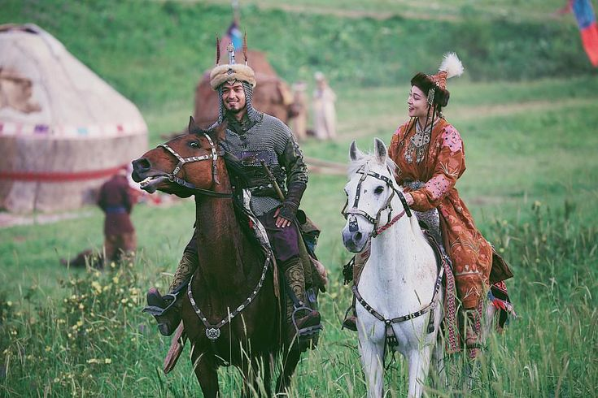
Обо мне
Обычный парень.
Свой путь.
Меня зовут Мухаммадзохид. Я вырос в Кыргызстане, в городе Ош,
в районе Араван, где уважают семью, старших и простые человеческие ценности.
Для меня это важно до сих пор.
В детстве я был обычным любопытным ребёнком: хотел понять, как всё работает,
иногда лез туда, куда не надо, и мог часами разбирать вещи, чтобы посмотреть,
что внутри. Это любопытство позже и привело меня в программирование.
Я не люблю делать из себя кого-то особенного. У меня были обычные радости,
обычные трудности, периоды, когда я терял интерес, и моменты, когда приходилось
начинать почти с нуля. Но именно так и складывается путь.
Мой путь
Как я пришёл в программирование.
Не по прямой. Зато по-настоящему.
Первые строки кода
Впервые начал программировать ещё в школе. Тогда это было просто интересно: хотелось понять, как создаются программы и что можно сделать самому.
Пауза и возврат
Потом я на время забросил это дело. На первом курсе вернулся к программированию, но быстро выгорел. Тогда стало понятно, что одного интереса мало — нужна дисциплина и терпение.
Настоящее возвращение
По-настоящему я вернулся только на втором курсе. Уже без лишнего шума, спокойно и по делу. С тех пор начал двигаться увереннее и собирать результаты, которые стали подтверждением, что я иду в правильную сторону.
Главный проект
Moodle AI определяет код, сгенерированный искусственным интеллектом, и помогает учителям проверять лабораторные работы учеников. Чтобы в обучении была честность, а знания — настоящими.
Детекция AI-кода
Инструмент выявляет код, написанный искусственным интеллектом, а не учеником.
Для учителей
Помогает учителям быстро и объективно проверять лабораторные работы.
Честное обучение
Я хочу, чтобы ученики получали настоящие знания, а не списывали работы у искусственного интеллекта.
Грант
Мы уже получили грант на этот проект и развиваем его дальше.
Android-разработка
Мне интересна мобильная разработка — это отдельное направление, которым я занимаюсь параллельно с проектом.
Что было сложно
Были и тяжёлые моменты: выгорание, сложные периоды, моменты, когда опускались руки. Но со временем я научился спокойнее относиться к трудностям — и просто продолжать двигаться дальше.
Без лишних слов — просто опыт, который сделал меня спокойнее.
Галерея
Мои фото.
Листайте — как ленту.
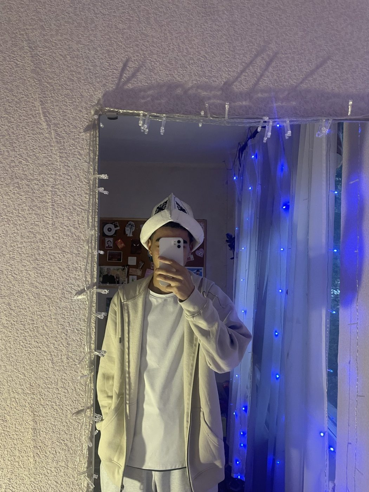
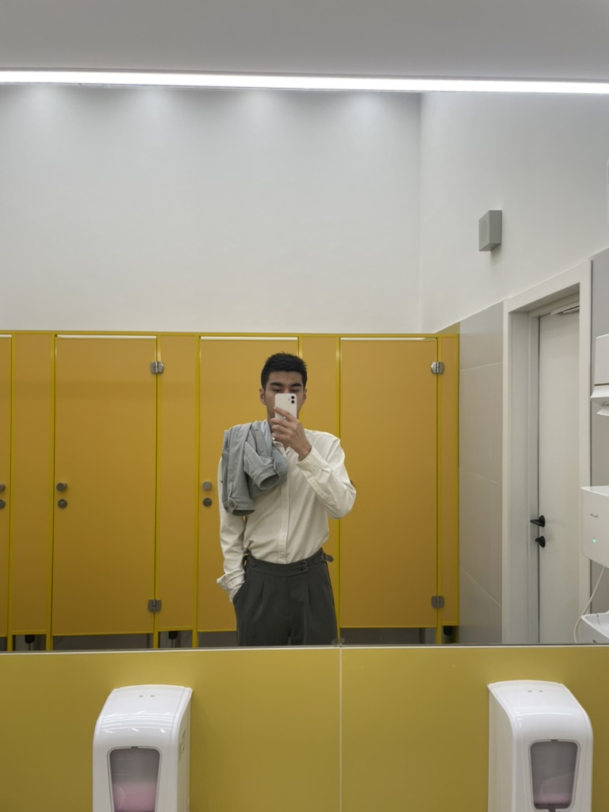
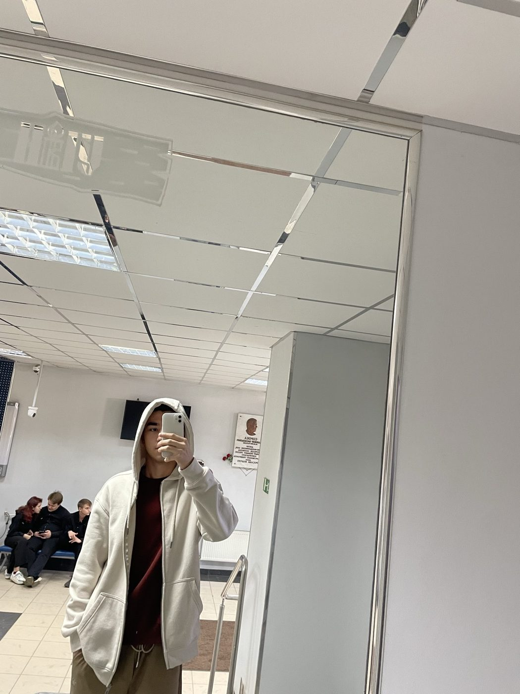
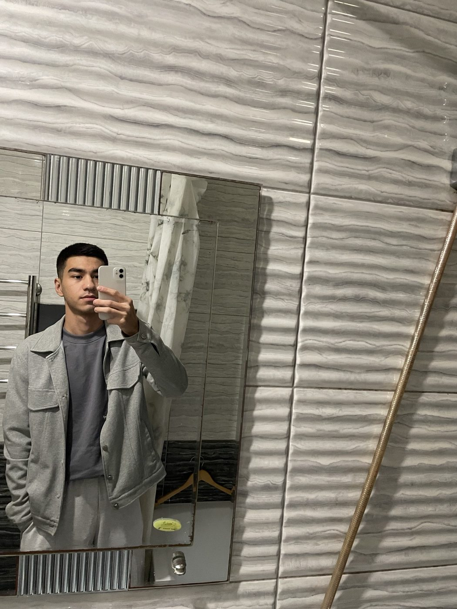
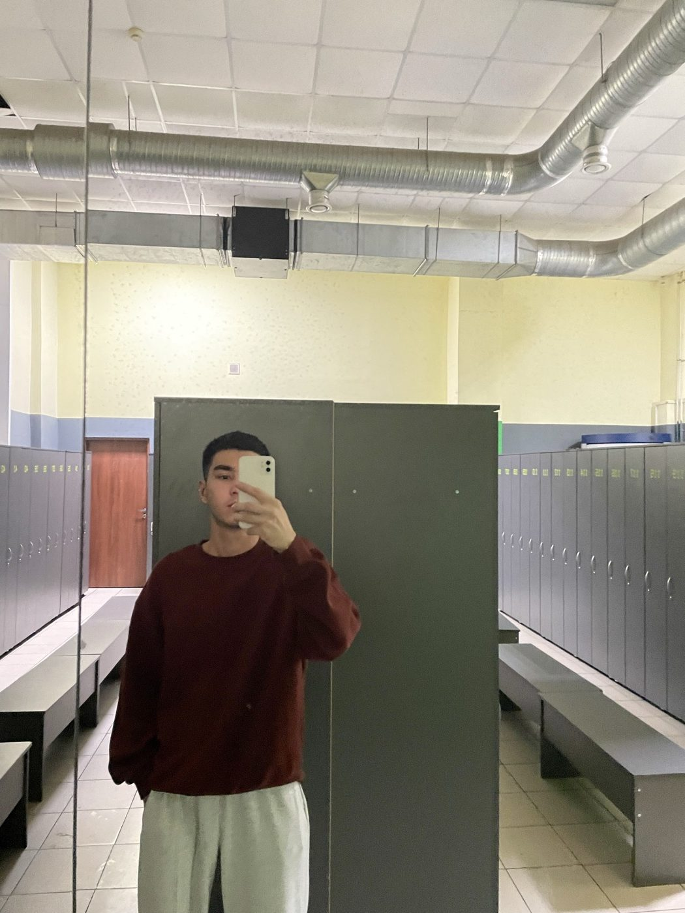
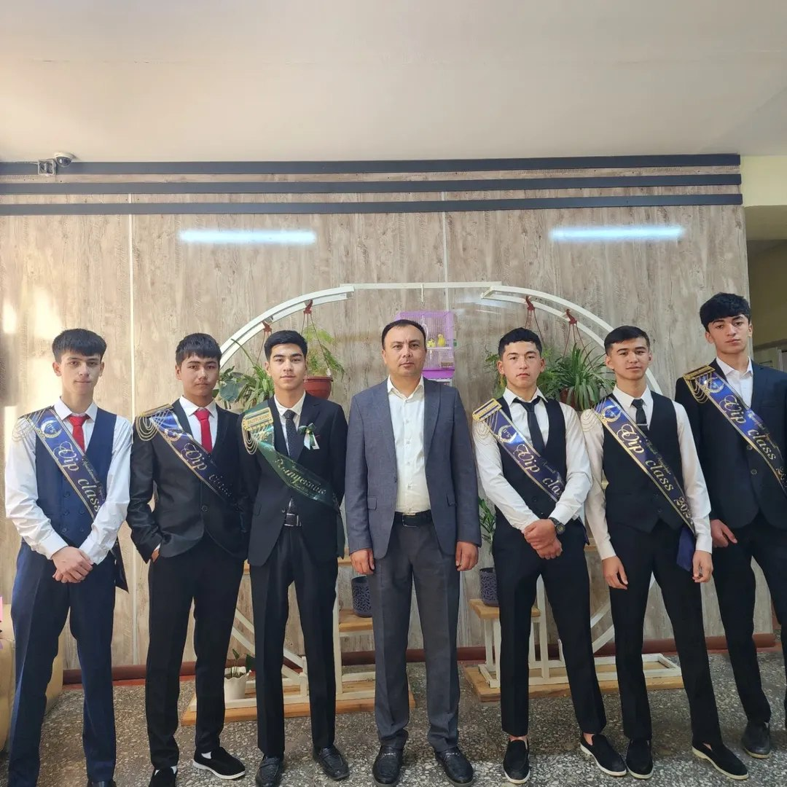
Грамоты
Награды.
Несколько грамот и сертификатов.
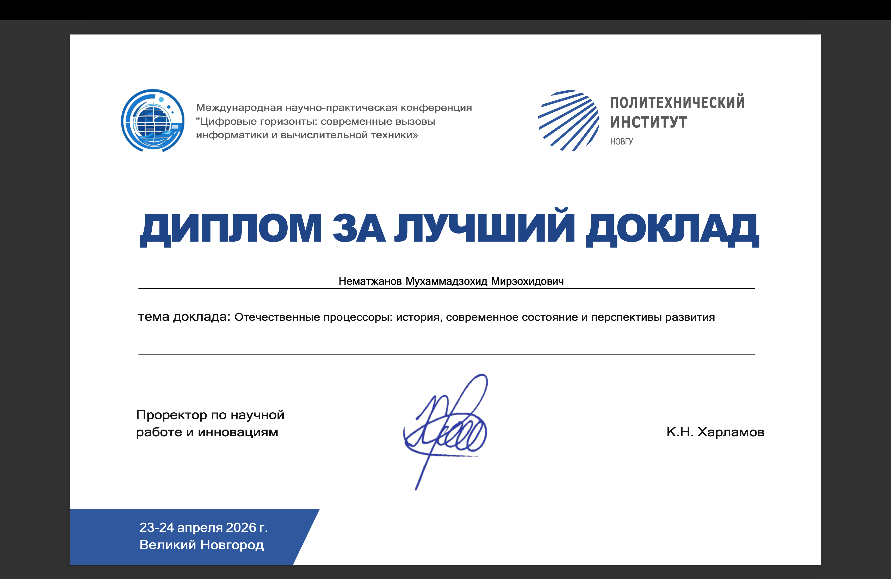
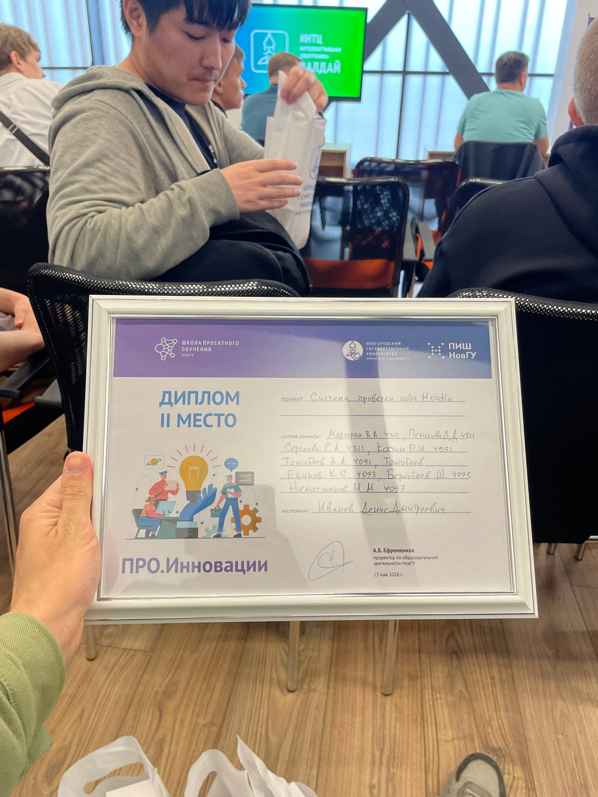
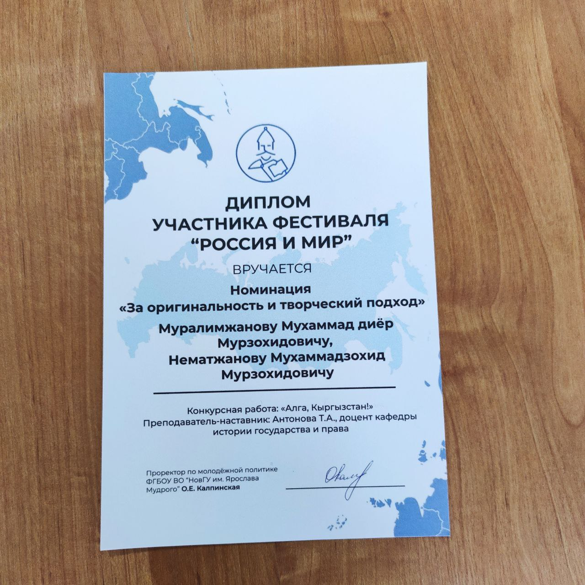
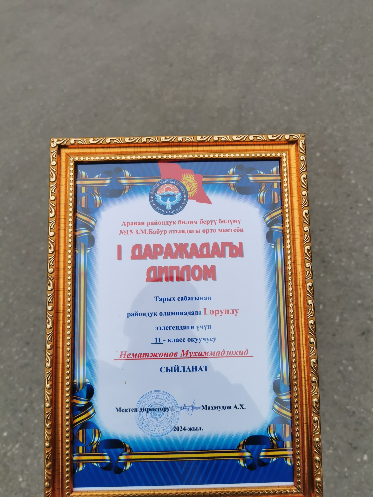
Заглядывай в канал.
Здесь будет мой путь без пафоса — просто жизнь, учеба и проекты.
Открыть канал